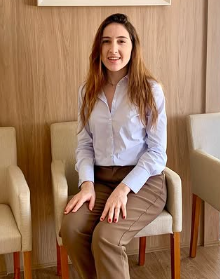

Dra. Grassiele Magalhães
Cirurgiã-dentista · Campo Grande, MS · MS-CD-8127

Dra. Grassiele Magalhães é cirurgiã-dentista em Campo Grande, MS, com atendimento odontológico para adultos e crianças. Atua em prevenção, limpeza dental, restaurações, clareamento, implantes, próteses, tratamento de canal, bruxismo, cirurgia odontológica e Estomatologia. O consultório está localizado no bairro Chácara Cachoeira, em Campo Grande, oferecendo atendimento individualizado e planejamento personalizado para cada paciente.